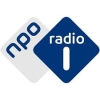

FIP

French radio station focused on worldmusic.
NPO1

Dutch news station with a light musical touch.
NPO2
Dutch Easy Listening radio station.
FIP GROOVE
FIP -- Groovy Music.
FIP JAZZ

FIP -- Just Jazz.
KLARA
Classical music station from Belgium.
Rienk Bezema 2017
Choose a Radio Station